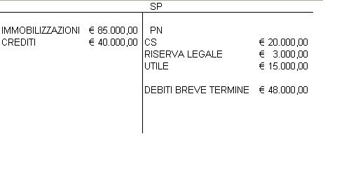

Torna alla pagina di Economia ed Organizzazione Aziendale
:: Tema d'Esame - 20/06/2007 ::
SOLUZIONE
1. Secondo il C.C. l'azienda è il complesso di beni organizzati dall'imprenditore per l'esercizio dell'attività di impresa.
Dalla dottrina ragioneristica si definisce azienda quell'organizzazione economica e sociale caratterizzata da stabilità e duratura nel tempo.
Sono considerate attività economiche la produzione, lo scambio, il consumo e il risparmio.
Il principio di economicità indica l'equilibrio economico dell'azienda, cioè svolgere la gestione in modo che il totale dei ricavi conseguiti consenta di remunerare adeguatamente tutti i fattori produttivi di cui l'azienda necessita.
Le principali attività economiche della famiglia sono il consumo e il risparmio.
Essere in una situazione di equilibrio significa che a parità di risparmio ho una parità di consumo.
Se avessi consumo>risparmio, la famiglia non potrebbe avere tutto quello di cui ha bisogno per sopravvivere e dovrebbe chiedere prestiti aumentando il consumo.
Se avessi risparmio>consumo, la famiglia avrebbe tutto quello di cui necessita e potrebbe anche avere qualcosa in più.
Rapportato alla macroeconomia: quando le famiglie consumano di più del risparmio che hanno ho un drastico calo dei finanziamenti alle imprese.
Infatti famiglie ->danno risparmi->banche->concedono prestiti (coi risparmi)->imprese.
Se diminuiscono i risparmi diminuiscono i prestiti e ciò rallenta l'espansione dell'attività produttiva, diminuiscono i salari, diminuisce il consumo e via dicendo.
Se aumentano i risparmi ci saranno più prestiti ciò in un primo momento sarà un beneficio, poi però aumenterà l'inflazione che farà diminuire il risparimio che ridurrà il consumo e così via.
E ora non ricordo più la domanda iniziale. Spero di aver risposto lo stesso!
'''Si ha economicità quando l'istituto è in grado di attrarre risorse sufficienti a remunerare tutte le condizioni di produzione e di consumo utilizzate per svolgere le proprie combinazioni economiche.
Per le famiglie è l'appagamento dei bisogni - dalle slide di Dallara (quelle che ci ha detto di non studiare)'''
2. L'impresa è il complesso di beni organizzati dall'imprenditore per l'esercizio dell'attività d'impresa C.C. art. 2555. Concide anche con la nozione di azienda.
3. Il collaboratore esterno di un imprenditore è una figura professionale che affianca il lavoro dell'imprenditore e lo aiuta a gestire il lato fiscale, tributario etc della sua impresa. Mette quindi a disposizione dell'imprenditore il suo lavoro perciò emette fattura. Colui che la riceve metterà l'imposto nella SE in dare sotto la vose costi per servizi
Un esempio di collaboratore può essere il commercialista.
4. Rateo attivo --> sono variazioni numerarie presunte che misurano ricavi di competenza dell'esercizio considerato la cui manifestazione monetaria è posticipata. Ad esempio possiamo affittare un capannone in nostro possesso in data 1/8/x e riscuotere il canone di 12000 € in data 1/8/x+1.
12000:365=x:153
quindi la quota di competenza di quest'anno è x=6016,64(calcoli a parte)
Perciò le scritture sono:
5030,14
fitti attivi <----------------------------------------- rateo attivo
aspetto economico aspetto finanziario
5. Ho un'impresa e decido di acquistarne una. Questa impresa lavora, produce reddito ed è situata in una bella posizione. Faccio valutare l'insieme dei beni che compongono l'azienda e, ad esempio, il perito dice che vale 100.
Io l'azienda però la pago 120.Perchè?
100 è il valore dell'azienda, 20 è l'avviamento, ossia la capacità dell'azienda che viene acquistata di produrre reddito, di avere già il suo giro di clientela, di guadagrare.
L'ammortamento viene inserito nella SP in dare come immobilizzazione in quanto rappresenta un costo pluriennale e va quindi ammortizzato.
6. Il patrimoio netto di u'azienda è costituito dal CS, dalle riserve e dall'utile/perdita d'esercizio. Nel nostro caso il PN ammonta a 20.000+3.000+15.000=38.000 euro.
Le passività di un'azienda sono costituite dal PN, dai debiti a medio-lungo termine ( Debiti per TFR, mutui passivi etc) e, dai debiti a breve termine (debiti v/fornitori e debiti tributari) e dai ratei e risconti passivi.

SOLUZIONE
1. Le scritture di assestamento trasformano i valori contabili in valori idonei alladeterminazione del reddito d'esercizio e del patrimonio di funzionamento. Si suddividono in:
Oppure ho appena trovato sul riassunto una domanda di questo tipo, riporto la risposta:
Le scritture di completamento sono scomponibili in cinque categorie:
1. quella degli INTERESSI. Se sono passivi, vanno nelle fonti della
situazione patrimoniale e nei costi del conto economico, viceversa, se sono interessi attivi vanno inseriti negli impieghi della situazione patrimoniale e nei ricavi del conto economico. La mora è una sorta di interesse passivo, va inserita nella situazione patrimoniale sommata al debito di cui fa parte e nel conto economico da sola. La stessa cosa vale per i tassi.
2. quella delle PERDITE SU CLIENTI.
Essa, nella situazione patrimoniale è rilevabile solo attraverso una riduzione dei crediti verso clienti, mentre l'entità vera e propria della perdita viene espressa dai costi del conto economico.
3. QUOTA DI ACCANTONAMENTO DEL TFR di competenza dell'esercizio. 4. FATTURE DA RICEVERE. Si misurano con l'aumento dei debiti. 5. FATTURE DA EMETTERE. Si misurano con l'aumento dei crediti.
2. Il leasing è una forma di contratto che permette di utilizzare un bene senza acquistarlo pagando un canone periodico con la possibilità di divenirne proprietari alla scadenza pagando un prezzo di riscatto. Il contratto può essere stipulato tra due o tre soggetti:
solitamente questo contratto:
Vantaggi:
Svantaggi:
solitamente questa tipologia di leasing:
Dal punto di vista contabile, nella situazione patrimoniale si tiene nelle immobilizzazioni una sorta di fondo di ammortamento del leasing a cui si toglie al valore di contratto la quota pagata nell'esercizio di competenza. Nel conto economico, tra i costi, vanno invece segnalati i canoni di competenza economica che corrispondono al canone mensile di competenza moltiplicato per il numero di mesi da cui vige il leasing in quell'esercizio. Infine, si inseriscono i risconti attivi nello stato patrimoniale, che corrispondono alla somma dei canoni pagati nell'esercizio meno i canoni di competenza economica.
Esempio:da fare
3. L'ammortamento esprime la partecipazione del costo delle immobilizzazioni alla formazione del reddito di ciascun esercizio in cui sono utilizzate per l'attività produttiva.
La quota di ammortamento è la quota parte del costo di una immobilizzazione e risulta dalla ripartizione del costo stesso tra gli esercizi della stimata vita utile del bene.
Il procedimento di ammortamento riguarda le immobilizzazioni materiali e immateriali soggette a fenomeni che ne riducono la residua possibilità di utilizzazione; questi fattori possono essere:
Il procedimento non si applica a beni la cui utilizzazione è perpetua, senza limitazioni di tempo come terreni o fabbricati. L'impresa per procedere correttamente alla determinazione delle quote di ammortamento deve predisporre un piano di ammortamento considerando:
La formula da usare è: valore da ammortizzare/n° anni vita utile del bene = quota di ammortamento
Questa quota può essere portata in diminuzione del valore del bene (ammortamento diretto) oppure la quota di ammortamento può affluire nel Fondo di ammortamento della SE (amm.to indiretto)
4. Il metodo FIFO è un metodo per il calcolo delle rimanenze. E' l'acronimo di First In First Out, cioè i il primo ad entrare è anche il primo ad uscire. In questo modo gli scarichi si valorizzano ai prezzi delle prime merci entrate e le scorte si valorizzano ai prezzi più recenti. In periodi di prezzi crescenti la valutazione delle rimanenze con questo metodo tende a essere più alta perchè effettuata ai prezzi delle partite acquistate più di recente e quindi con prezzi più elevati.
5. Le immobilizzazioni finanziarie scaturiscono da impieghi di mezzi finanziari effettuati ad di fuori dell'attività tipica aziendale e destinati a tornare liquidi in tempi medio-lunghi. Sono costituite da azioni o quote di capitale di altre società acquisite al fine di partecipare attivamente allo svolgimento dell'attività di queste ultime (partecipazioni) o da crediti di finanziamento concessi ad altre imprese (finanziamenti a medio-lungo termine ->mutui attivi). Queste immobilizzazioni implicano una riserva di pari importo (buy back) (???) -> Il buy-back (o riacquisto di azioni proprie) è l'operazione di acquisto di azioni proprie da parte di una società per azioni. Spesso operazioni di buyback vengono fatte in seguito all'aquisizione tramite indebitamento personale (leveraged buyout): questo è un modo per far uscire liquidità dall'azienda e per consentire ai nuovi proprietari di ripagare parte del debito. Quando ho eccesso di liquidità l'azienda ritiene che la sua liquidità in eccesso possa essere più redditizia se investita nelle sue stesse azioni, piuttosto che adoperata in impieghi bancari (a causa, magari, dei bassi tassi di interesse o reinvestita nel suo business caratteristico.
6. Analisi del Break Even Point determina a quale grado di sfruttamento della capacità produttiva o in corrispondenza a quale volume di vendite o a quale ammontare di fatturato dell'impresa si realizza l'equilibrio economico. Corrisponde al punto di incontro della retta che rappresenta i costi totali (costi fissi + costi variabili) con la retta che rappresenta i ricavi.
L'equazione da usare per trovarlo è RT = CT dove:
p * q = CF + cv * q